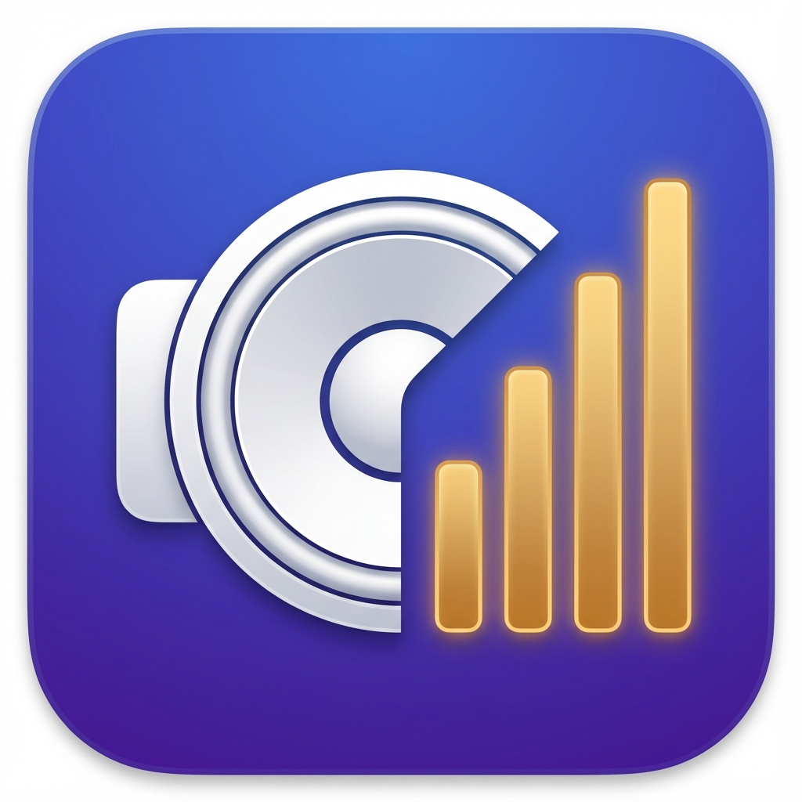

Rank your speakers, headphones, microphones and cameras once. Your Mac then picks the best one that's plugged in, every time, on its own.
Speakers, headphones and microphones each get a list. Drag them into the order you want. When something connects or disconnects, the highest-ranked device that's actually available becomes the default.
The same idea for cameras, using the system-wide preferred camera macOS has exposed since Sonoma. Plug in a webcam and it takes over; unplug it and you're back to the built-in one.
Resizable, movable, mirrored, always on top if you want it. Open it with a keyboard shortcut from anywhere, from the menu, or by clicking the notch.
A slider and a mute button for each active device, plus a live level meter so "can you hear me?" has an answer before the call starts.
macOS has no single "default camera" switch the way it has for sound. What it has is one system-wide preferred camera, and this app sets it.
Apps that ask macOS for the default follow it — FaceTime, Photo Booth, and most apps without their own camera picker. Apps that remember their own choice ignore it: Zoom, Teams, OBS, Google Meet in a browser. No app can make them do otherwise. Set the camera once inside those and they stay put.
There's no signed release — you build it yourself, which takes about thirty seconds and leaves no security warning to click past.
git clone https://github.com/Paul10142/av-priority-bar.git cd av-priority-bar ./install.sh
That compiles the app, puts it in your Applications folder and launches it. A speaker icon appears in your menu bar; there's no dock icon and no window, which is the point.
You need the Xcode Command Line Tools
(xcode-select --install). Full Xcode is not required.
| Permission | Why |
|---|---|
| Camera | Required for camera switching to work at all — macOS ignores a camera preference from an app it hasn't granted access. The app opens a video stream in one place only, the live preview, and the green camera light tracks that window honestly. |
| Microphone | The mic check meter, and nothing else. Nothing is recorded. |
Audio Priority Bar by tobi is the original, and all of the audio side is its work. This is a fork that adds cameras, a floating mirror window, and a build that doesn't need Xcode.
MIT licensed, like the original.